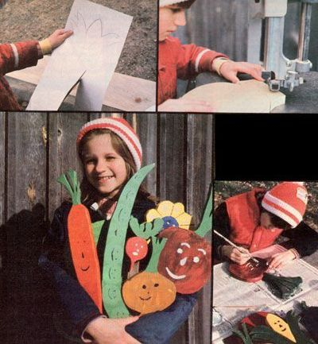

[1] Outline vegetable shapes on paper and cut them out. These forms will serve as your patterns. Sometimes I forget exactly what a vegetable looks like, so I study Mom's seed catalogs for inspiration. I make my vegetables very large-one to two feet long!-so they can be seen easily after the garden grows. And I'm careful not to give them thin "stems", because I've found that sturdy vegetables survive longer than the fragile ones do.
[2] Arrange the patterns, close together, on a 1 X 10 or 1 X 12 pine board (you could probably use another kind of wood if you don't find pine lumber). Try to keep the forms away from any knots and, to give the markers strength, place the pieces so that their longest dimension lines up with the grain of the wood. When you've puzzled out the most efficient arrangement, trace the patterns with a pencil.
[3] Now it's time for you to cut. A saber saw is a very heavy tool for me to handle, and our jigsaw is slow going, so I like to use our neighbor's band saw the best. Dad always explains the safest methods of sawing to me, and he shows me how to hold the wood so that my fingers are away from the blade. If I run into problems, I just turn off the saw and ask for some help.
[4] Next comes sanding. I always try to do this thoroughly and carefully, because rough edges are sharp and make the markers unpleasant to handle. I've used plain sandpaper, but my dad's disk sander is much quicker.
[5] Put a layer of primer on the vegetables to help them last when they're out in the wind and weather. I used to prime by hand with a paintbrush, but this year I discovered that dipping is an easier way. My brother John (I've hired him to help me with the priming) or I just pound a small nail partway into each marker, bend the nail, dip the marker in the primer, and then hang the vegetable on a wire. A pan placed underneath the markers catches the drips.
[6] When the primer dries, you should paint each vegetable with two coats of its basic color.
[7] Then comes my favorite part of all . . . painting the faces. Every face is special because it's different from all the others. When I start painting the faces, I know I'm almost done with my project.
[8] The final step is to screw stakes to the backs of the markers. I always use cedar or redwood for the stakes because those woods don't rot easily. I also make sure to attach the stakes to the markers so that the top of each stake is slightly above the marker top. That way, people pound on the stake, and not on the marker, when they're putting the wooden vegetables in their gardens.
|
 |
|
|